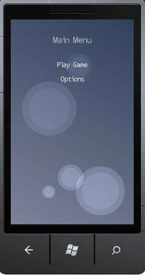

Game State Management (Phone) Sample
This sample shows how to manage the transitions between different menus and gameplay states on Windows Phone.
|  |
Sample Overview
The sample implements a simple game flow with a Main menu, an Options screen, some actual gameplay, and a Pause menu. It displays a loading screen in between the menus and gameplay, and uses a popup message box to confirm whether the user really wants to quit.
The ScreenManager class is a reusable component that maintains a stack of one or more GameScreen instances. It coordinates the transitions from one screen to another, and takes care of routing user input to whatever screen is on top of the stack.
Each screen class (including the actual gameplay, which is just another screen) derives from GameScreen. This provides Update, HandleInput, and Draw methods, plus some logic for managing the transition state. GameScreen does not actually implement any transition rendering effects, however. It merely provides information such as "You are currently 30% of the way through transitioning off," leaving it up to the derived screen classes to do something sensible with that information in their drawing code. This makes it easy for screens to implement different visual effects on top of the same underlying transition infrastructure.
The Windows Phone version of this sample comes with a number of improvements to take into account special considerations for working with the device. InputState now contains fields for touch input. ScreenManager now supports Gestures and handles serialiazation and deserialization of game screens to account for exiting of the game through the user or the device. GameScreen also has Serialize and Deserialize methods that allow the subclasses to hook into the ScreenManager serialization system.This sample uses the following keyboard and gamepad controls.
| Action | Windows Phone | Windows - Keyboard Control | Windows/Xbox - Gamepad Control |
|---|---|---|---|
| Select a menu entry. | TAP | UP ARROW, DOWN ARROW | Left thumb stick, D-Pad up and down |
| Accept the menu selection. | TAP | SPACEBAR, ENTER | A, START |
| Cancel the menu. | BACK | ESC | B, BACK |
| Move a game entity. | N/A | UP ARROW, DOWN ARROW, LEFT ARROW, and RIGHT ARROW | Left thumb stick |
| Pause the game. | N/A | ESC | START, BACK |
The source files in the ScreenManager folder (ScreenManager.cs, GameScreen.cs, and InputState.cs) provide a reusable state management component that could be used by any game. The files in the Screens folder implement the specific screens used by this sample: you would probably want to change or replace these to re-skin the menu system before using it in a game of your own.
Several different things can happen when one screen is stacked over the top of another:
The ScreenManager component does not directly update the screen transition states. It just calls Update on each of the screens, telling them whether they are covered by some other non-popup screen, and whether some other screen on top of them has the input focus. The GameScreen.Update method is responsible for updating the transition state in response to this information, transitioning on or off as appropriate.
The ScreenManager also calls GameScreen.HandleInput for the topmost active screen. Unlike the Update method, this is only ever called for one screen per frame, because there should never be more than one screen responding to user input at the same time. Screens are considered to be active even while they are in the process of transitioning on. This lets players who are familiar with the game navigate quickly through the menus without having to bother waiting for transitions to complete. If they dismiss a menu before it has finished transitioning on, the transition will simply turn around and move back off again. You can see this in action if you toggle rapidly back and forth between the main menu and options screens.
Note that transitions are entirely optional. If a GameScreen leaves its TransitionOnTime and TransitionOffTime properties set to zero, it will instantly pop on and off, and thus will have no need to implement transition effects in its rendering code.
The LoadingScreen coordinates transitions between the menu system and the game itself. Normally, one screen transitions off at the same time as the next screen is transitioning on. For larger transitions that can take a longer time to load their data we want the menu system to be entirely gone before we start loading the game. This is done as follows:
New in 3.0: the GameScreen class, in conjunction with the InputState helper, contains logic for tracking which gamepad is active. An Xbox can have up to four connected gamepads, so you should not always just assume the first controller is the active one. Players expect to be able to pick up any gamepad and use that to play the game. This behavior is implemented by the GameScreen.ControllingPlayer property, which is a Nullable<PlayerIndex>. If this is null, any player can control the screen, but when it is set to a specific value, only that player has control. In this sample, the MainMenuScreen responds to input from any controller. It works out which controller the player is using by noticing what controller was used to select each menu option. Whenever the main menu activates a different screen, it passes through this player index as the controlling player for the new screen. The controlling player selection is passed on from each screen to the next, so from this point on, only that player is able to control the game. Once gameplay is complete and the controlling player returns to the main menu, the controlling player is set back to null, so the sample will once more respond to input from any connected gamepad.
The GameplayScreen also includes logic to pause the game if the controlling player accidentally unplugs their gamepad.
Extending the Sample
You can extend the sample by adding new screens, changing the menu options, and altering the drawing code used by the MenuScreen, MessageBoxScreen, and BackgroundScreen classes. For example, you could make the MenuScreen transition effect slide vertically rather than horizontally, or add some subtle animation to the BackgroundScreen.
In the interest of simplicity, this sample implements GameScreen as a standalone class rather than deriving from DrawableGameComponent. If you want to use components together with this menu system, you could extend GameScreen to host other components inside itself. Each screen would maintain a list of the components it is using, call Initialize on new components when they are added, and plumb the Update and Draw calls through to every component in this list.